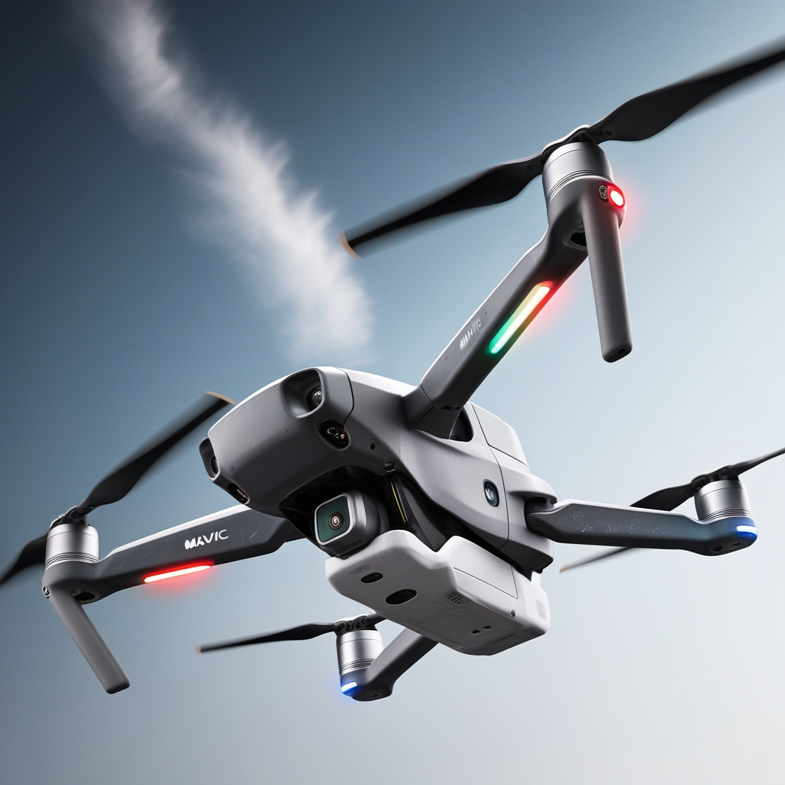
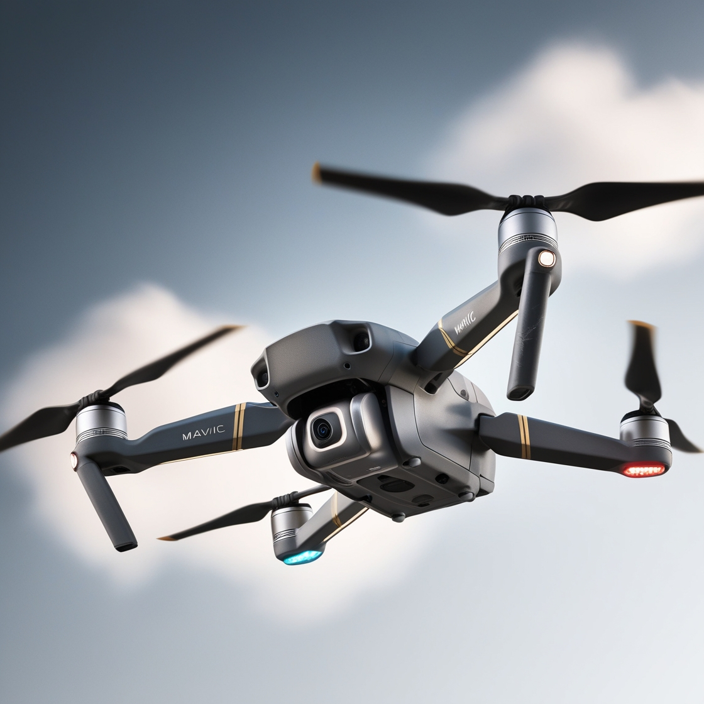
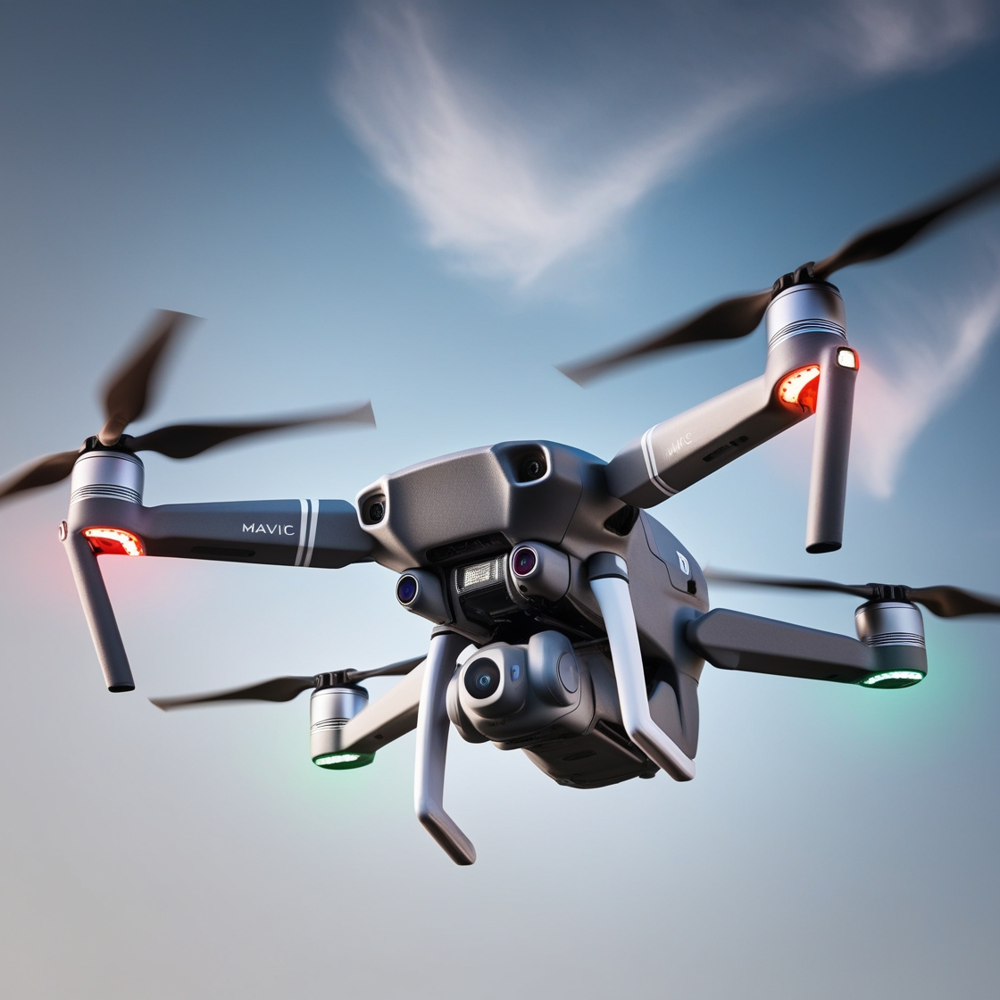

A high-angle, close-up shot of a sleek and modern DJI Mavic drone, its aerodynamic body and propellers rendered in metallic gray and white, with subtle scratches and wear on the surface, set against a blurred, gradient blue sky with a few wispy white clouds, the drone's LED lights glowing softly in shades of red, green, and blue, its cameras and sensors intricately detailed, the overall aesthetic a blend of futuristic sophistication and rugged functionality.
Dronai tapo neatsiejama šiuolaikinės technologijos dalimi ir plačiai naudojami tiek civilinėse, tiek karinėse srityse. Dronų naudojimas greitai išplito tiek pramoginėse veiklose, tiek pramoniniuose procesuose, tokiuose kaip žemės ūkis, kasyba ir statybos. Modernūs dronai gali skraidyti dideliais atstumais ir pasiekti aukštus aukščius, įrengti su įvairiais jutikliais ir kameromis. Dronai suteikia galimybę atlikti oro fotografiją ir filmavimą, kas padeda kūrybinėse industrijose bei žurnalistikoje. Kai kurie dronai yra specialiai sukurti atlikti pavojingas užduotis, kaip stebėti gaisrus arba gelbėjimo operacijas sunkiai pasiekiamose vietovėse. Dronų naudojimas žemės ūkyje leidžia tiksliai stebėti pasėlius, įvertinti derlių ir netgi purkšti pesticidus tolygiai ir efektyviai. Dronai gali būti naudojami geodezijos darbams, tiksliai matuojant žemės paviršiaus pokyčius ar kuriant 3D žemėlapius. Įrenginiai, kaip dronai, turi automatinius skrydžio valdymo sistemų algoritmus, kurie užtikrina jų saugumą ir tikslumą. Dronai yra naudojami ir karo operacijose, kur jie padeda atlikti žvalgybą arba vykdyti tikslinius smūgius. Atsižvelgiant į spartų dronų technologijų vystymąsi, ateityje tikimasi, kad jie taps dar labiau integruoti į kasdienį gyvenimą, pvz., prekių pristatymui ar net keleivių transportui.
Dronai yra technologijos stebuklas, kuris atvėrė daugybę naujų galimybių įvairiose srityse. Jie gali būti naudojami ne tik pramogoms, bet ir rimtiems verslo tikslams, kaip, pavyzdžiui, nuotolinis stebėjimas ar pristatymų paslaugos. Dronai su kameromis ir jutikliais suteikia galimybę atlikti oro tyrimus ir rinkti duomenis, kurių rinkimas būtų sudėtingas tradiciniais metodais. Dronų technologijos leidžia sumažinti kaštus ir padidinti darbo efektyvumą atliekant įvairias užduotis, tokias kaip statybų ar infrastruktūros patikra. Be to, dronai gali būti naudojami ne tik civilinėse, bet ir karinėje srityje, kur jie atlieka žvalgybines ir netgi kovines funkcijas. Kiekvienais metais atsiranda vis pažangesnių dronų modelių, turinčių ilgesnį veikimo laiką, didesnį svorio kėlimą ir tikslesnį navigacijos sistemų veikimą. Viena iš įdomių naujovių – autonominiai dronai, kurie gali atlikti sudėtingus užduotis be žmogaus įsikišimo. Dronai taip pat tapo svarbūs mokslinių tyrimų srityje, padedant stebėti laukinius gyvūnus, sekant oro taršos lygį ar net tyrinėjant vulkanus. Tuo pačiu metu vis daugiau žmonių atranda, kad dronai taip pat gali būti naudojami kasdieniniame gyvenime, pavyzdžiui, norint užfiksuoti nepamirštamus šeimos ar kelionės momentus. Ateityje tikėtina, kad dronai taps dar labiau integruoti į mūsų gyvenimus, išplės savo funkcijas ir taps naujos kartos paslaugų, kaip oro taksi, dalimi.
Dronai tampa vis svarbesni sprendžiant įvairias problemas, su kuriomis susiduriame kasdieniame gyvenime ir pramonėje. Pavyzdžiui, dronai jau naudojami nuotolinėje medicinoje, pristatydami vaistus ir medicinines priemones į atokias vietoves, kuriose pasiekti yra sudėtinga. Žemės ūkyje dronai padeda ūkininkams stebėti augalų sveikatą, įvertinti dirvožemio būklę ir atlikti tikslius laistymo ar trąšų purškimo darbus, taip sumažinant išlaidas ir padidinant efektyvumą. Be to, dronų naudojimas tapo būtinas ekologijos srityje, kai reikia stebėti miškų būklę, gyvūnų populiacijas ir apsaugoti gamtą nuo brakonierių. Šių technologijų plėtra taip pat leidžia tiksliau atlikti oro stebėjimą, kad būtų užfiksuoti orų pokyčiai ar stebima klimato kaita. Dronai taip pat dažnai naudojami statybų sektoriuje, atlikdami patikras, matavimus ir tiksliai užfiksuodami statybų procesą. Jų gebėjimas pasiekti sunkiai prieinamas vietas leidžia ženkliai sutaupyti laiko ir sumažinti riziką darbuotojams. Nors dronų technologija vis dar vystosi, jie jau dabar plačiai naudojami tiek pramogoms, tiek įvairiose profesinėse srityse. Ateityje dronai gali tapti dar autonomiškesni ir sumanesni, galbūt net pakeisdamas tradicinius transportavimo ir prekių tiekimo modelius. Atsižvelgiant į jų galimybes, dronai tikrai suvaidins svarbų vaidmenį ateities technologijų ir paslaugų evoliucijoje.